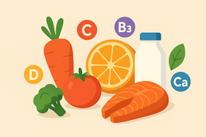

Дефицит витаминов и минералов

Зачем организму нужны витамины и минералы
Обычно людей беспокоит лишь сытность и вкусность еды, которую они потребляют.
Но кроме белков, жиров и углеводов человеческому организму необходимы витамины, минералы и клетчатка.
Без них невозможна правильная работа всех систем организма.
Они участвуют в обмене веществ, поддерживают иммунитет, прочность костей, здоровье органов пищеварения и многих других.
При недостатке витаминов и минералов человек может испытывать усталость, ухудшение концентрации, ломкость ногтей, выпадение волос, сухость кожи и др.
Исторически, люди питались тем, что могли добыть в условиях своей местности.
Это нередко приводило к разным дефицитами микро и макроэлементов, в некоторых случаях даже трагичным.
Сейчас эти проблемы решены за людей за счёт импорта и разнообразия продуктов, а также добавления витаминов и минералов в некоторые продукты.
в ряде продуктов добавлены железо, витамин А, витамин С, а во многих странах мира, удалённых от экватора и имеющих мало солнечных дней за год, в продукты питания включен витамин D3.
Источник - Витамины, получаемые из пищи или витамины из добавок.
Исторические примеры дефицита витаминов
История показывает, к чему приводит длительное отсутствие важных веществ в рационе.
-
Цинга — болезнь, вызванная дефицитом витамина C.
Ею страдали моряки, которые питались только рыбой и сухпайками.
Без свежих овощей и фруктов начинались кровотечения, выпадали зубы, а при тяжёлых формах болезнь приводила к смерти. -
Пеллагра — болезнь, вызванная нехваткой витамина B3 (ниацина).
В начале XX века на юге США многие бедняки питались почти одной кукурузой,
из-за чего у них развивались кожные поражения, диарея и психические расстройства. -
Бери-бери — заболевание, связанное с дефицитом витамина B1 (тиамина).
Оно встречалось у людей, питавшихся в основном очищенным белым рисом.
Болезнь вызывала слабость, судороги и нарушения работы сердца.
Эти примеры показывают, насколько важно разнообразное питание, включающее злаки, овощи, фрукты, мясо, рыбу, орехи и молочные продукты.
Основные проблемы питания: